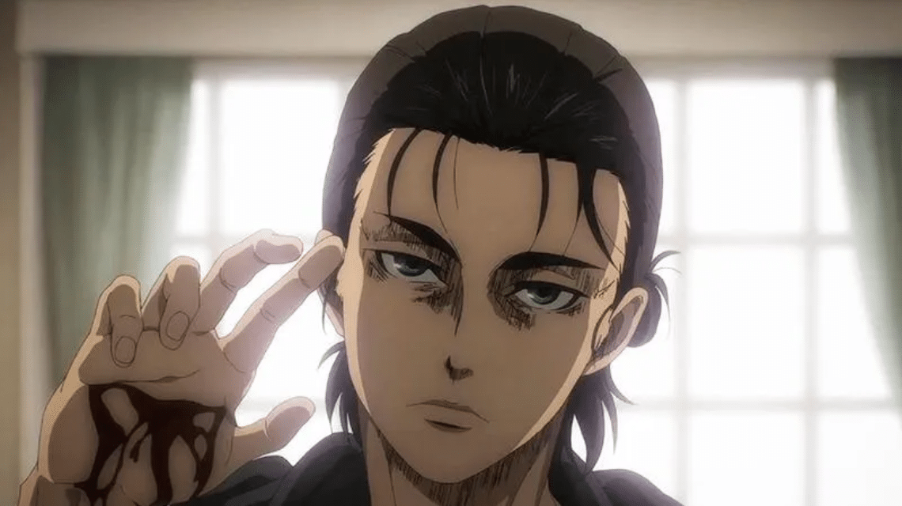
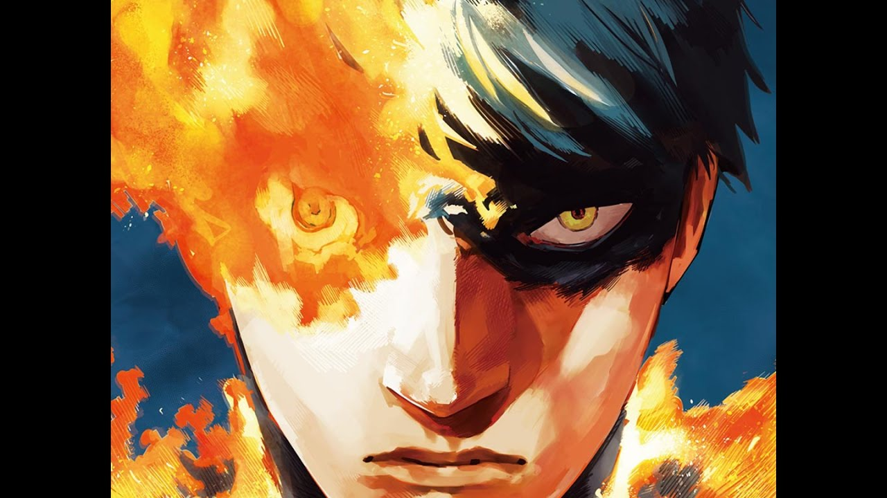
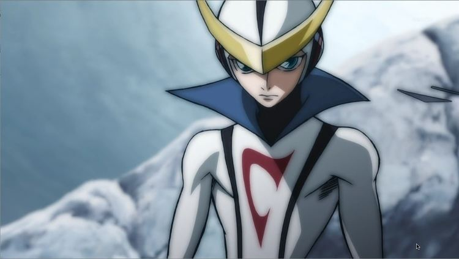
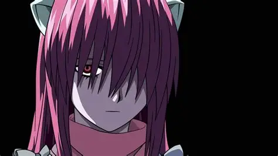
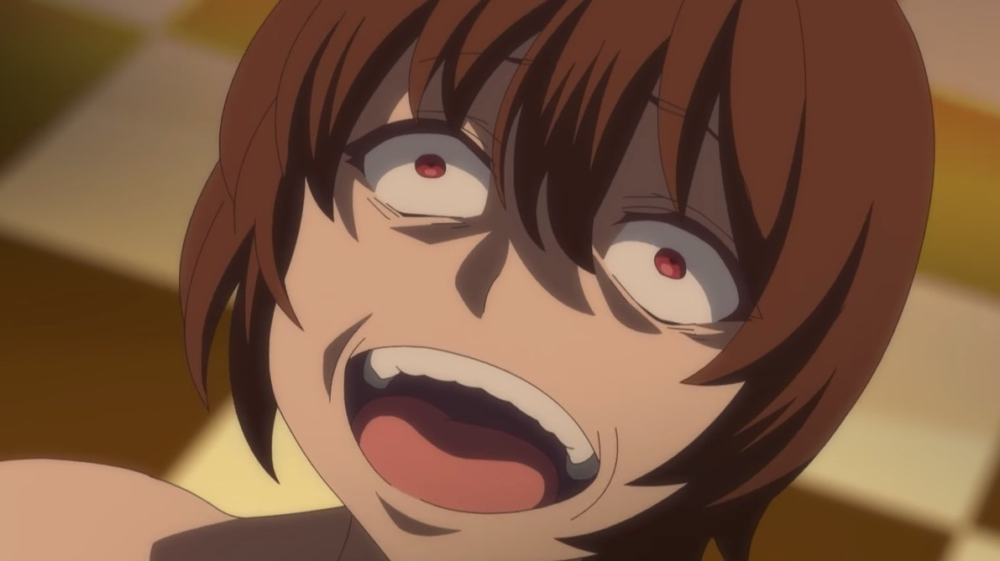
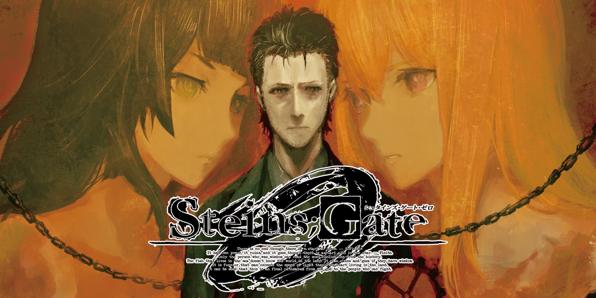

SMASH Senpai
Top 10 Anime Where the MC Lost Everything
Not every anime protagonist rises stronger after hardship. Some are pushed so far that they lose everything — their family, their dreams, their sanity, and even themselves.
These characters didn’t just suffer once. They endured relentless trauma, betrayal, loss, and psychological collapse until they became shadows of who they once were. These are the stories where hope fades, and survival itself becomes a cruel challenge.
What makes these anime unforgettable is how deeply the pain is written into the narrative. The suffering isn’t temporary or brushed aside — it shapes the protagonist permanently, creating some of the most broken MCs in anime history.
This list ranks the Top 10 Anime Where the MC Lost Everything — featuring the most suffered, traumatized, and emotionally shattered protagonists. If you’re searching for anime with a truly broken MC, these stories leave scars that never fully heal.
Sponsored
#1 Berserk (Guts)

Berserk tells the story of suffering in its rawest, most unfiltered form, and Guts is the embodiment of a man who loses everything and is forced to keep moving. From the moment he is born beneath a corpse, Guts’ life is defined by pain, violence, and abandonment. Unlike many anime protagonists, his suffering never feels temporary or symbolic — it is constant, brutal, and deeply personal.
What makes Guts’ loss unbearable is not just what he endures, but how often hope is taken from him just as he begins to believe. He loses his family, his sense of belonging, his physical body, and eventually his future. The Eclipse shatters everything he fought for, turning friendship into betrayal and dreams into nightmares. From that point on, survival itself becomes an act of defiance.
Berserk does not allow Guts to heal cleanly. Trauma lingers. Rage replaces rest. Nightmares never stop. Even moments of peace are fragile, always threatening to collapse under the weight of the past. His battles are not just against monsters, but against despair, fate, and the idea that suffering is meaningless.
Guts is the definition of a broken protagonist — not because he gives up, but because he continues despite having every reason to stop. Berserk asks a painful question through him: if life only offers suffering, is continuing forward still an act of strength? Guts’ answer is carved in blood, scars, and an unyielding will to exist.
- Episode count: 25+ (varies by adaptation)
- Genre: Dark Fantasy, Psychological, Action
- Known for: Extreme trauma, betrayal, and existential suffering
- Core theme: Endurance in a world ruled by cruelty

play anime smash or pass here (not sponsored)
SMASH SENPAI – Smash or Pass#2 Tokyo Ghoul (Ken Kaneki)

Tokyo Ghoul is a slow descent into psychological collapse, and Ken Kaneki is one of anime’s most tragic examples of a protagonist who loses everything piece by piece. What begins as an ordinary life is shattered in an instant, forcing Kaneki into a world where survival demands the destruction of his identity.
Kaneki doesn’t just lose his humanity — he is forced to reject it. His transformation into a half-ghoul traps him between two worlds, accepted by neither. Hunger becomes torture. Existence becomes guilt. Every attempt to cling to morality results in pain, until that morality is beaten out of him both physically and mentally.
The torture scene marks a breaking point, not because of violence alone, but because it destroys Kaneki’s sense of self. Survival requires him to abandon who he was. Each new version of Kaneki — calm, cruel, detached — is a coping mechanism born from trauma. The anime shows how repeated suffering reshapes a person, not into something stronger, but into something emptier.
What makes Kaneki’s suffering resonate is its realism. He doesn’t become powerful without consequence. Every gain costs him emotionally. By the end, Kaneki has lost innocence, belonging, love, and the ability to see himself as human. Tokyo Ghoul asks whether survival is worth it if it means losing the person you once were — and Kaneki never finds a clear answer.
- Episode count: 48
- Genre: Psychological, Horror, Dark Fantasy
- Known for: Extreme mental trauma and identity loss
- Core theme: Survival through self-destruction
Sponsored
#3 Attack on Titan (Eren Yeager)
Attack on Titan begins as a story about freedom, but ultimately becomes a tragedy about what freedom costs. Eren Yeager’s suffering is not limited to loss — it is rooted in the realization that every path forward demands sacrifice on an unimaginable scale. From childhood, his life is shaped by violence, death, and the collapse of everything he believes in.
Unlike many protagonists, Eren does not suffer blindly. He understands what awaits him. Knowledge becomes his curse. As truths about the world are revealed, hope dissolves into inevitability. Friends become enemies. Dreams turn into burdens. The boy who wanted freedom becomes chained by destiny.
What makes Eren’s suffering unique is isolation. Even when surrounded by allies, he stands alone. Every choice distances him further from those he loves. His transformation is not fueled by rage alone, but by resignation. He moves forward not because he believes in victory, but because stopping would make all previous deaths meaningless.
By the end, Eren has lost innocence, companionship, moral clarity, and the right to be understood. Attack on Titan does not present him as a hero or a villain, but as a broken human crushed by impossible choices. His story asks whether freedom achieved through destruction is freedom at all — or just another prison disguised as purpose.
- Episode count: 87
- Genre: Action, Psychological, Dark Fantasy
- Known for: Moral collapse and existential tragedy
- Core theme: Freedom gained through irreversible loss
#4 Re:Zero − Starting Life in Another World (Subaru Natsuki)

Re:Zero turns the isekai power fantasy into a psychological nightmare, and Subaru Natsuki is one of the most mentally tortured protagonists in anime. Unlike typical heroes, Subaru gains no strength, no skill, and no control over his situation. His only ability — returning from death — forces him to experience suffering repeatedly with no escape.
Subaru doesn’t just die — he remembers every death. The pain, the fear, the betrayal, and the moments where he begs for mercy all remain vivid. Each reset erases progress but preserves trauma. The people he cares about forget him, while he carries the emotional weight of dozens of unseen timelines. This isolation slowly destroys his sense of self-worth.
What makes Subaru’s suffering brutal is humiliation. He fails constantly. He makes the wrong choices. His good intentions lead to worse outcomes. The anime refuses to reward him simply for trying. Instead, it exposes his flaws, forcing him to confront his arrogance, fear, and desperation head-on.
Subaru’s breaking points feel painfully human. He screams. He cries. He begs to be saved. Yet no one truly understands what he’s endured. Re:Zero shows that suffering doesn’t always make you stronger — sometimes it just leaves you exhausted. Subaru’s struggle isn’t about victory, but about finding the will to stand up again when death itself refuses to let you rest.
- Episode count: 50+
- Genre: Psychological, Isekai, Drama
- Known for: Repeated death trauma and emotional breakdowns
- Core theme: Survival without relief or recognition
Sponsored
#5 Fire Punch (Agni)
Fire Punch is suffering taken to its most extreme form, and Agni is a protagonist whose pain never ends. Cursed with regenerative abilities, Agni is set on fire by an inextinguishable flame that burns him alive endlessly — without the mercy of death. Every second of his existence is agony.
What makes Agni’s suffering unbearable is duration. He doesn’t suffer for days or months, but for years. His body heals while his nerves continue to feel everything. Hunger, burning, and exhaustion overlap until pain becomes his only constant. Fire Punch removes the idea that suffering leads to growth — instead, it erodes identity.
As Agni survives, his purpose fractures. Revenge gives him direction, but not peace. Each step forward costs him another piece of his humanity. The world he inhabits is cruel, absurd, and indifferent. Justice doesn’t exist — only survival and interpretation.
Agni’s greatest loss isn’t his body — it’s meaning. Fire Punch forces viewers to question whether enduring endless pain makes life valuable or meaningless. Agni becomes a symbol, then a monster, then a god, without ever being allowed to simply be human. His suffering isn’t tragic because it ends badly — it’s tragic because it never truly ends at all.
- Episode count: Manga adaptation (anime pending)
- Genre: Dark Fantasy, Psychological, Post-Apocalyptic
- Known for: Endless physical pain and existential despair
- Core theme: Living without the possibility of relief
#6 Dororo (Hyakkimaru)

Dororo tells a quiet but devastating story of loss, and Hyakkimaru is a protagonist who begins life with almost nothing. Before he can even understand existence, his body is sacrificed to demons — leaving him without limbs, senses, or the ability to feel pain. His suffering starts before he has a chance to choose.
Unlike many tragic characters, Hyakkimaru doesn’t remember happiness. He grows up disconnected from the world, unable to see, hear, or feel properly. Each demon he defeats restores a piece of his body, but also introduces new pain. Sensation, once absent, becomes overwhelming. Pain is not healing — it’s a reminder of what was stolen.
The cruelty of Hyakkimaru’s journey lies in its irony. Reclaiming his humanity destabilizes the land, forcing others to suffer for what was taken from him. He must choose between his body and the lives of people who never wronged him. The anime presents no easy answers — only consequences.
Hyakkimaru’s suffering is quiet, restrained, and deeply emotional. He is not driven by rage, but by a simple desire to exist as a whole person. Dororo asks whether reclaiming what was stolen justifies the pain it causes — and whether someone born into suffering is ever allowed to choose themselves.
- Episode count: 24
- Genre: Dark Fantasy, Historical, Drama
- Known for: Physical loss and moral conflict
- Core theme: Humanity earned through suffering
Sponsored
#7 Casshern Sins (Casshern)
Casshern Sins is a slow, existential descent into despair, and Casshern is a protagonist burdened not by loss alone, but by responsibility for the end of the world itself. Humanity is gone, robots are decaying, and existence itself is rotting — all because of Casshern’s past actions.
Unlike heroes who fight to save the future, Casshern wanders through a world that is already beyond saving. He is immortal, incapable of dying, yet surrounded by beings desperate for an end. Robots hunt him not out of hatred, but out of hope — believing that consuming him might grant them survival.
Casshern’s suffering is internal. He barely remembers who he was, yet feels crushing guilt for a sin he cannot fully recall. Every encounter reinforces the same truth: his existence brings suffering, not salvation. He doesn’t seek redemption — he seeks understanding.
Casshern Sins explores the agony of existing without purpose. Casshern is trapped between life and death, blamed for everything, yet unable to undo anything. His journey is not about fixing the world — it’s about accepting responsibility in a universe that offers no forgiveness. His suffering is quiet, endless, and profoundly lonely.
- Episode count: 24
- Genre: Psychological, Sci-Fi, Philosophical
- Known for: Existential despair and apocalyptic loneliness
- Core theme: Living with irreversible guilt
#8 Elfen Lied (Lucy)
Elfen Lied presents one of anime’s most tragic portrayals of abuse and alienation, and Lucy is a character shaped entirely by suffering. From childhood, she is treated not as a human, but as a monster — feared, isolated, and violently punished for simply existing.
Lucy’s trauma is layered. She experiences extreme bullying, emotional neglect, and brutal experimentation. Every attempt at forming a connection ends in betrayal or violence. Over time, her pain manifests as uncontrollable rage, creating a split between innocence and destruction.
What makes Lucy’s suffering devastating is inevitability. She is never given a real chance to heal. Society decides what she is before she can choose who she wants to be. Her violent actions are horrifying — yet rooted in years of cruelty inflicted upon her.
Elfen Lied forces viewers to confront an uncomfortable truth: monsters are often created, not born. Lucy’s story is tragic because it suggests that love, if offered earlier, might have changed everything. Instead, her life becomes a cycle of loss, guilt, and irreversible damage. Her suffering is not justified — but it is painfully understandable.
- Episode count: 13
- Genre: Psychological, Horror, Drama
- Known for: Extreme trauma and emotional brutality
- Core theme: Abuse creates monsters
#9 Redo of Healer (Keyaru)
Redo of Healer is controversial for a reason, and Keyaru is one of anime’s most broken protagonists. His suffering begins with betrayal — trusted allies imprison, torture, drug, and repeatedly violate him, reducing his existence to a tool for others’ pleasure.
Unlike most revenge stories, Keyaru’s trauma is prolonged and inescapable. He is forced to heal his abusers, reliving pain again and again while being stripped of identity. By the time he gains the power to reset time, the person he once was no longer exists.
Keyaru’s revenge is disturbing because it mirrors his abuse. He does not seek justice — he seeks control. His actions are cruel, calculated, and emotionally detached. The anime deliberately blurs the line between victim and villain, making viewers question whether healing is even possible after such damage.
Keyaru’s suffering doesn’t excuse his actions — but it explains them. Redo of Healer explores how extreme trauma can hollow a person out, replacing empathy with obsession. His story isn’t about recovery — it’s about what happens when pain becomes the foundation of identity.
- Episode count: 12
- Genre: Dark Fantasy, Psychological, Revenge
- Known for: Extreme abuse and moral collapse
- Core theme: Trauma corrupts beyond repair
#10 Steins;Gate 0 (Okabe Rintarou)
Steins;Gate 0 shows what happens after hope dies, and Okabe Rintarou becomes a protagonist crushed by failure. Unlike the original series, this story follows an Okabe who has given up — haunted by the inability to save the people he loves most.
Okabe’s suffering is rooted in memory. He remembers timelines where his friends died horribly, and lives in a reality where he chose to stop trying. Every day becomes a reminder of cowardice, guilt, and irreversible loss. His cheerful persona disappears, replaced by emotional numbness.
What makes Okabe’s pain devastating is realism. There is no villain to fight, no clear solution, only regret. He avoids time travel not because he can’t — but because he’s afraid of failing again. This fear slowly consumes him.
Steins;Gate 0 is about learning to stand up after emotional defeat. Okabe’s journey isn’t heroic — it’s human. He represents those who survive tragedy but don’t feel alive afterward. His suffering proves that sometimes, the hardest battle isn’t changing fate — it’s forgiving yourself for not being strong enough.
- Episode count: 23
- Genre: Sci-Fi, Psychological, Drama
- Known for: Depression, guilt, and emotional breakdown
- Core theme: Living with failure
Play Smash or Pass on SMASH Senpai.
 PLAY SMASH OR PASS
PLAY SMASH OR PASS